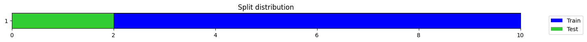

class TSSequencerPlus(nn.Sequential):
r"""Time Series Sequencer model based on:
Tatsunami, Y., & Taki, M. (2022). Sequencer: Deep LSTM for Image Classification. arXiv preprint arXiv:2205.01972.
Official implementation: https://github.com/okojoalg/sequencer
Args:
c_in: the number of features (aka variables, dimensions, channels) in the time series dataset.
c_out: the number of target classes.
seq_len: number of time steps in the time series.
d_model: total dimension of the model (number of features created by the model).
depth: number of blocks in the encoder.
act: the activation function of positionwise feedforward layer.
lstm_dropout: dropout rate applied to the lstm sublayer.
dropout: dropout applied to to the embedded sequence steps after position embeddings have been added and
to the mlp sublayer in the encoder.
drop_path_rate: stochastic depth rate.
mlp_ratio: ratio of mlp hidden dim to embedding dim.
lstm_bias: determines whether bias is applied to the LSTM layer.
pre_norm: if True normalization will be applied as the first step in the sublayers. Defaults to False.
use_token: if True, the output will come from the transformed token. This is meant to be use in classification tasks.
use_pe: flag to indicate if positional embedding is used.
n_cat_embeds: list with the sizes of the dictionaries of embeddings (int).
cat_embed_dims: list with the sizes of each embedding vector (int).
cat_padding_idxs: If specified, the entries at cat_padding_idxs do not contribute to the gradient; therefore, the embedding vector at cat_padding_idxs
are not updated during training. Use 0 for those categorical embeddings that may have #na# values. Otherwise, leave them as None.
You can enter a combination for different embeddings (for example, [0, None, None]).
cat_pos: list with the position of the categorical variables in the input.
token_size: Size of the embedding function used to reduce the sequence length (similar to ViT's patch size)
tokenizer: nn.Module or callable that will be used to reduce the sequence length
feature_extractor: nn.Module or callable that will be used to preprocess the time series before
the embedding step. It is useful to extract features or resample the time series.
flatten: flag to indicate if the 3d logits will be flattened to 2d in the model's head if use_token is set to False.
If use_token is False and flatten is False, the model will apply a pooling layer.
concat_pool: if True the head begins with fastai's AdaptiveConcatPool2d if concat_pool=True; otherwise, it uses traditional average pooling.
fc_dropout: dropout applied to the final fully connected layer.
use_bn: flag that indicates if batchnorm will be applied to the head.
bias_init: values used to initialized the output layer.
y_range: range of possible y values (used in regression tasks).
custom_head: custom head that will be applied to the network. It must contain all kwargs (pass a partial function)
verbose: flag to control verbosity of the model.
Input:
x: bs (batch size) x nvars (aka features, variables, dimensions, channels) x seq_len (aka time steps)
"""
def __init__(self, c_in:int, c_out:int, seq_len:int, d_model:int=128, depth:int=6, act:str='gelu',
lstm_dropout:float=0., dropout:float=0., drop_path_rate:float=0., mlp_ratio:int=1, lstm_bias:bool=True,
pre_norm:bool=False, use_token:bool=True, use_pe:bool=True,
cat_pos:Optional[list]=None, n_cat_embeds:Optional[list]=None, cat_embed_dims:Optional[list]=None, cat_padding_idxs:Optional[list]=None,
token_size:int=None, tokenizer:Optional[Callable]=None, feature_extractor:Optional[Callable]=None,
flatten:bool=False, concat_pool:bool=True, fc_dropout:float=0., use_bn:bool=False,
bias_init:Optional[Union[float, list]]=None, y_range:Optional[tuple]=None, custom_head:Optional[Callable]=None, verbose:bool=True,
**kwargs):
if use_token and c_out == 1:
use_token = False
pv("use_token set to False as c_out == 1", verbose)
backbone = _TSSequencerBackbone(c_in, seq_len, depth=depth, d_model=d_model, act=act,
lstm_dropout=lstm_dropout, dropout=dropout, drop_path_rate=drop_path_rate,
pre_norm=pre_norm, mlp_ratio=mlp_ratio, use_pe=use_pe, use_token=use_token,
n_cat_embeds=n_cat_embeds, cat_embed_dims=cat_embed_dims, cat_padding_idxs=cat_padding_idxs, cat_pos=cat_pos,
feature_extractor=feature_extractor, token_size=token_size, tokenizer=tokenizer)
self.head_nf = d_model
self.c_out = c_out
self.seq_len = seq_len
# Head
if custom_head:
if isinstance(custom_head, nn.Module): head = custom_head
else: head = custom_head(self.head_nf, c_out, seq_len, **kwargs)
else:
nf = d_model
layers = []
if use_token:
layers += [TokenLayer()]
elif flatten:
layers += [Reshape(-1)]
nf = nf * seq_len
else:
if concat_pool: nf *= 2
layers = [GACP1d(1) if concat_pool else GAP1d(1)]
if use_bn: layers += [nn.BatchNorm1d(nf)]
if fc_dropout: layers += [nn.Dropout(fc_dropout)]
# Last layer
linear = nn.Linear(nf, c_out)
if bias_init is not None:
if isinstance(bias_init, float): nn.init.constant_(linear.bias, bias_init)
else: linear.bias = nn.Parameter(torch.as_tensor(bias_init, dtype=torch.float32))
layers += [linear]
if y_range: layers += [SigmoidRange(*y_range)]
head = nn.Sequential(*layers)
super().__init__(OrderedDict([('backbone', backbone), ('head', head)]))
TSSequencer = TSSequencerPlusTSSequencerPlus
This is a PyTorch implementation created by Ignacio Oguiza (oguiza@timeseriesAI.co) based on Sequencer: Deep LSTM for Image Classification
TSSequencerPlus
TSSequencerPlus (c_in:int, c_out:int, seq_len:int, d_model:int=128, depth:int=6, act:str='gelu', lstm_dropout:float=0.0, dropout:float=0.0, drop_path_rate:float=0.0, mlp_ratio:int=1, lstm_bias:bool=True, pre_norm:bool=False, use_token:bool=True, use_pe:bool=True, cat_pos:Optional[list]=None, n_cat_embeds:Optional[list]=None, cat_embed_dims:Optional[list]=None, cat_padding_idxs:Optional[list]=None, token_size:int=None, tokenizer:Optional[Callable]=None, feature_extractor:Optional[Callable]=None, flatten:bool=False, concat_pool:bool=True, fc_dropout:float=0.0, use_bn:bool=False, bias_init:Union[float,list,NoneType]=None, y_range:Optional[tuple]=None, custom_head:Optional[Callable]=None, verbose:bool=True, **kwargs)
Time Series Sequencer model based on:
Tatsunami, Y., & Taki, M. (2022). Sequencer: Deep LSTM for Image Classification. arXiv preprint arXiv:2205.01972. Official implementation: https://github.com/okojoalg/sequencer
Args: c_in: the number of features (aka variables, dimensions, channels) in the time series dataset. c_out: the number of target classes. seq_len: number of time steps in the time series. d_model: total dimension of the model (number of features created by the model). depth: number of blocks in the encoder. act: the activation function of positionwise feedforward layer. lstm_dropout: dropout rate applied to the lstm sublayer. dropout: dropout applied to to the embedded sequence steps after position embeddings have been added and to the mlp sublayer in the encoder. drop_path_rate: stochastic depth rate. mlp_ratio: ratio of mlp hidden dim to embedding dim. lstm_bias: determines whether bias is applied to the LSTM layer. pre_norm: if True normalization will be applied as the first step in the sublayers. Defaults to False. use_token: if True, the output will come from the transformed token. This is meant to be use in classification tasks. use_pe: flag to indicate if positional embedding is used. n_cat_embeds: list with the sizes of the dictionaries of embeddings (int). cat_embed_dims: list with the sizes of each embedding vector (int). cat_padding_idxs: If specified, the entries at cat_padding_idxs do not contribute to the gradient; therefore, the embedding vector at cat_padding_idxs are not updated during training. Use 0 for those categorical embeddings that may have #na# values. Otherwise, leave them as None. You can enter a combination for different embeddings (for example, [0, None, None]). cat_pos: list with the position of the categorical variables in the input. token_size: Size of the embedding function used to reduce the sequence length (similar to ViTs patch size) tokenizer: nn.Module or callable that will be used to reduce the sequence length feature_extractor: nn.Module or callable that will be used to preprocess the time series before the embedding step. It is useful to extract features or resample the time series. flatten: flag to indicate if the 3d logits will be flattened to 2d in the models head if use_token is set to False. If use_token is False and flatten is False, the model will apply a pooling layer. concat_pool: if True the head begins with fastais AdaptiveConcatPool2d if concat_pool=True; otherwise, it uses traditional average pooling. fc_dropout: dropout applied to the final fully connected layer. use_bn: flag that indicates if batchnorm will be applied to the head. bias_init: values used to initialized the output layer. y_range: range of possible y values (used in regression tasks).
custom_head: custom head that will be applied to the network. It must contain all kwargs (pass a partial function) verbose: flag to control verbosity of the model.
Input: x: bs (batch size) x nvars (aka features, variables, dimensions, channels) x seq_len (aka time steps)
bs = 16
nvars = 4
seq_len = 50
c_out = 2
xb = torch.rand(bs, nvars, seq_len)
model = TSSequencerPlus(nvars, c_out, seq_len)bs = 16
nvars = 4
seq_len = 50
c_out = 2
xb = torch.rand(bs, nvars, seq_len)
model = TSSequencerPlus(nvars, c_out, seq_len, lstm_dropout=.1, dropout=.1, use_token=True)
test_eq(model(xb).shape, (bs, c_out))
model = TSSequencerPlus(nvars, c_out, seq_len, lstm_dropout=.1, dropout=.1, use_token=False)
test_eq(model(xb).shape, (bs, c_out))bs = 16
nvars = 4
seq_len = 50
c_out = 2
xb = torch.rand(bs, nvars, seq_len)
bias_init = np.array([0.8, .2])
model = TSSequencerPlus(nvars, c_out, seq_len, bias_init=bias_init)
test_eq(model(xb).shape, (bs, c_out))
test_eq(model.head[1].bias.data, tensor(bias_init))bs = 16
nvars = 4
seq_len = 50
c_out = 1
xb = torch.rand(bs, nvars, seq_len)
bias_init = 8.5
model = TSSequencerPlus(nvars, c_out, seq_len, bias_init=bias_init)
test_eq(model(xb).shape, (bs, c_out))
test_eq(model.head[1].bias.data, tensor([bias_init]))use_token set to False as c_out == 1bs = 16
nvars = 4
seq_len = 50
c_out = 2
xb = torch.rand(bs, nvars, seq_len)
bias_init = np.array([0.8, .2])
model = TSSequencerPlus(nvars, c_out, seq_len, bias_init=bias_init)
test_eq(model(xb).shape, (bs, c_out))
test_eq(model.head[1].bias.data, tensor(bias_init))Feature extractor
Its a known fact that transformers cannot be directly applied to long sequences. To avoid this, we have included a way to subsample the sequence to generate a more manageable input.
from tsai.data.validation import get_splits
from tsai.data.core import get_ts_dlsX = np.zeros((10, 3, 5000))
y = np.random.randint(0,2,X.shape[0])
splits = get_splits(y)
dls = get_ts_dls(X, y, splits=splits)
xb, yb = dls.train.one_batch()
xb
TSTensor(samples:8, vars:3, len:5000, device=cpu, dtype=torch.float32)If you try to use SequencerPlus, its likely youll get an out-of-memory error.
To avoid this you can subsample the sequence reducing the inputs length. This can be done in multiple ways. Here are a few examples:
# Separable convolution (to avoid mixing channels)
feature_extractor = Conv1d(xb.shape[1], xb.shape[1], ks=100, stride=50, padding=0, groups=xb.shape[1]).to(default_device())
feature_extractor.to(xb.device)(xb).shapetorch.Size([8, 3, 99])# Convolution (if you want to mix channels or change number of channels)
feature_extractor=MultiConv1d(xb.shape[1], 64, kss=[1,3,5,7,9], keep_original=True).to(default_device())
test_eq(feature_extractor.to(xb.device)(xb).shape, (xb.shape[0], 64, xb.shape[-1]))# MaxPool
feature_extractor = nn.Sequential(Pad1d((0, 50), 0), nn.MaxPool1d(kernel_size=100, stride=50)).to(default_device())
feature_extractor.to(xb.device)(xb).shapetorch.Size([8, 3, 100])# AvgPool
feature_extractor = nn.Sequential(Pad1d((0, 50), 0), nn.AvgPool1d(kernel_size=100, stride=50)).to(default_device())
feature_extractor.to(xb.device)(xb).shapetorch.Size([8, 3, 100])Once you decide what type of transform you want to apply, you just need to pass the layer as the feature_extractor attribute:
bs = 16
nvars = 4
seq_len = 1000
c_out = 2
d_model = 128
xb = torch.rand(bs, nvars, seq_len)
feature_extractor = partial(Conv1d, ks=5, stride=3, padding=0, groups=xb.shape[1])
model = TSSequencerPlus(nvars, c_out, seq_len, d_model=d_model, feature_extractor=feature_extractor)
test_eq(model.to(xb.device)(xb).shape, (bs, c_out))Categorical variables
from tsai.utils import alphabet, ALPHABETa = alphabet[np.random.randint(0,3,40)]
b = ALPHABET[np.random.randint(6,10,40)]
c = np.random.rand(40).reshape(4,1,10)
map_a = {k:v for v,k in enumerate(np.unique(a))}
map_b = {k:v for v,k in enumerate(np.unique(b))}
n_cat_embeds = [len(m.keys()) for m in [map_a, map_b]]
szs = [emb_sz_rule(n) for n in n_cat_embeds]
a = np.asarray(a.map(map_a)).reshape(4,1,10)
b = np.asarray(b.map(map_b)).reshape(4,1,10)
inp = torch.from_numpy(np.concatenate((c,a,b), 1)).float()
feature_extractor = partial(Conv1d, ks=3, padding='same')
model = TSSequencerPlus(3, 2, 10, d_model=64, cat_pos=[1,2], feature_extractor=feature_extractor)
test_eq(model(inp).shape, (4,2))[W NNPACK.cpp:53] Could not initialize NNPACK! Reason: Unsupported hardware.Sequence Embedding
Sometimes you have a samples with a very long sequence length. In those cases you may want to reduce its length before passing it to the transformer. To do that you may just pass a token_size like in this example:
t = torch.rand(8, 2, 10080)
SeqTokenizer(2, 128, 60)(t).shapetorch.Size([8, 128, 168])t = torch.rand(8, 2, 10080)
model = TSSequencerPlus(2, 5, 10080, d_model=64, token_size=60)
model(t).shapetorch.Size([8, 5])